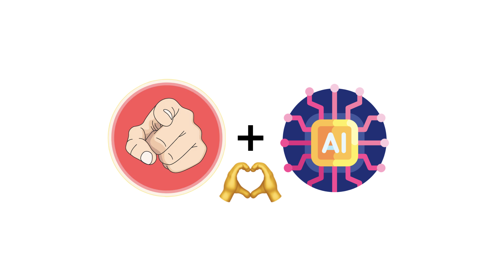
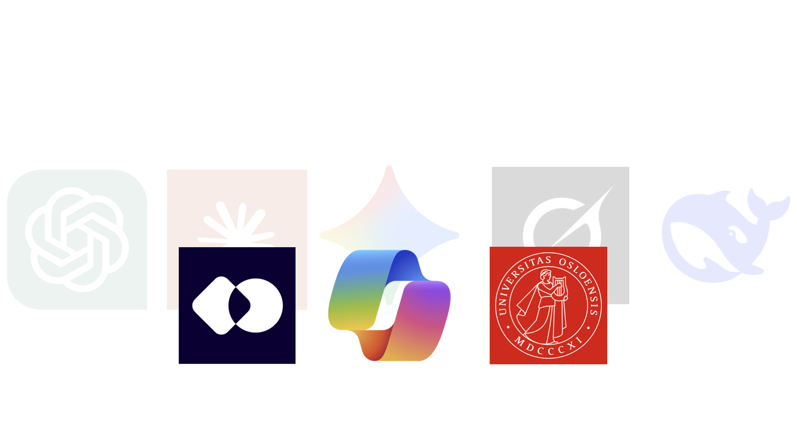
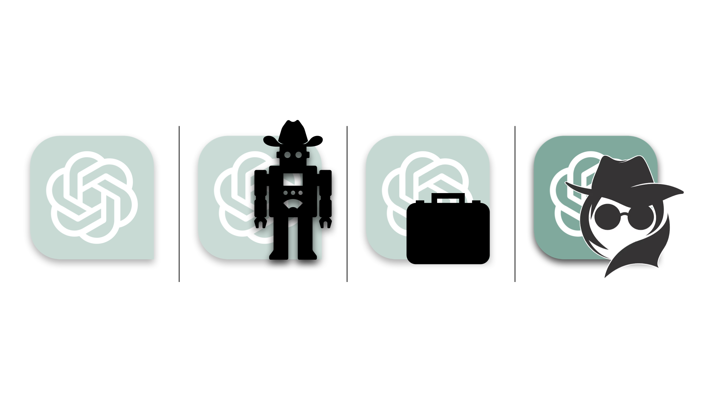
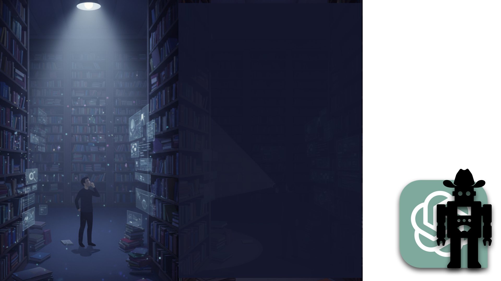
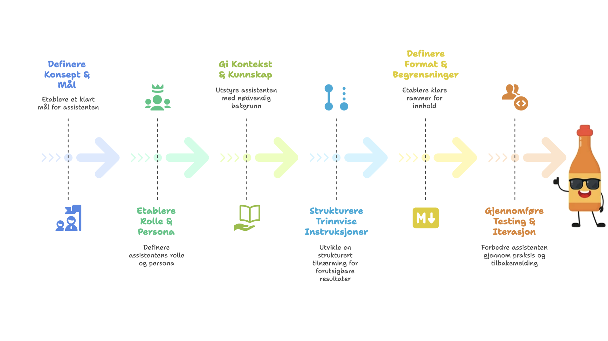
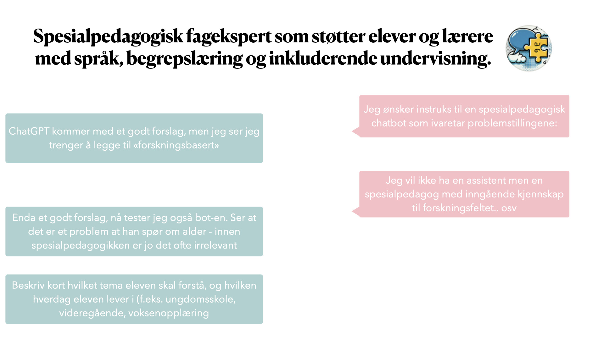
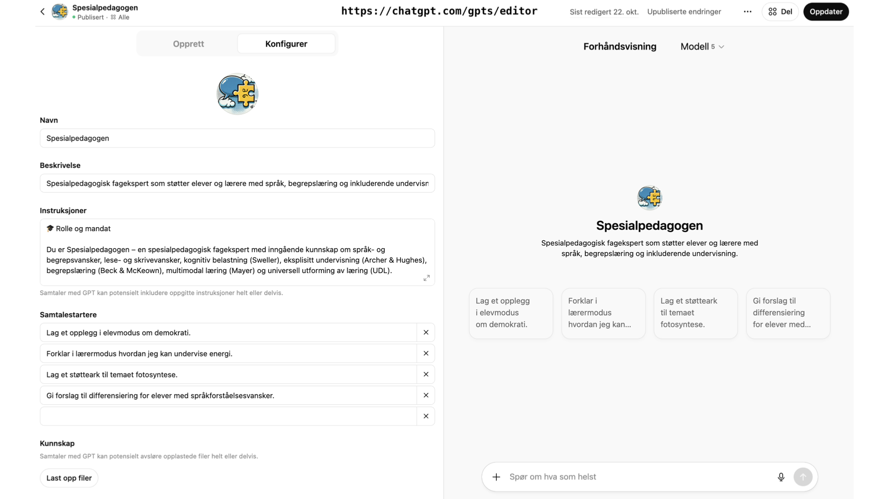
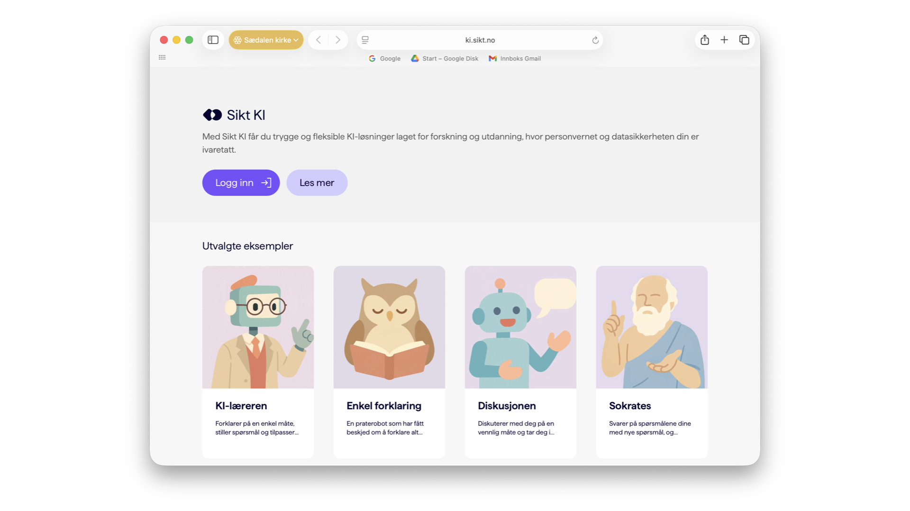
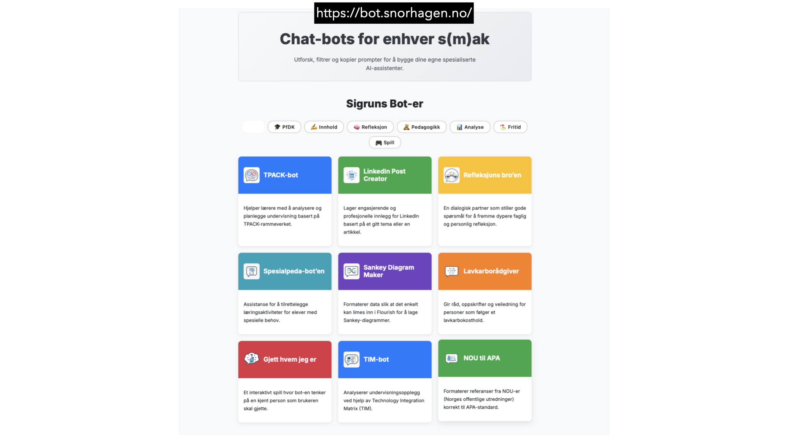
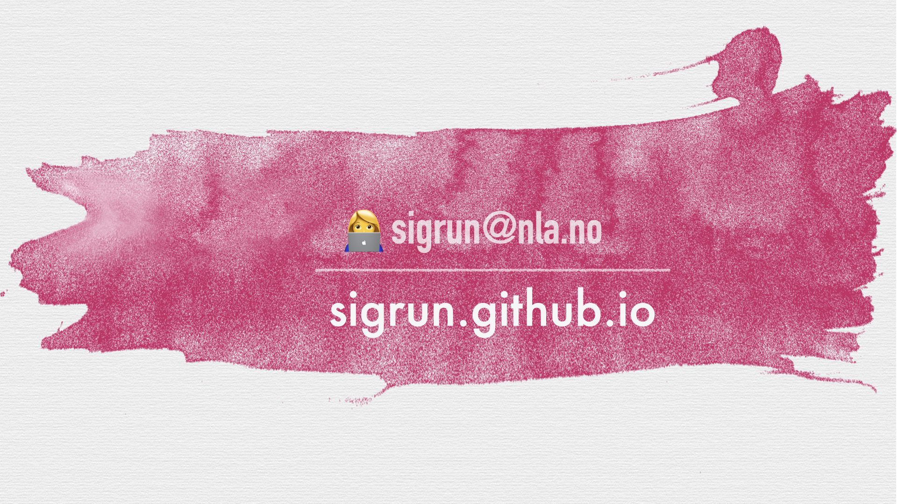

Forskerbot – Hvordan lage sin egen KI-assistent
Et kurs i hvordan du kan bygge en personlig og kontekstsensitiv KI-assistent (bot) som støtter faglig arbeid, forskning og undervisning.
1. Kontekst & Modeller
Målet er å hjelpe KI-en å oppdage din kontekst

Målet med en KI-assistent er ikke at du skal få en personlig relasjon til en AI. Målet er å hjelpe den å oppdage ditt eget bruksområde og din faglige kontekst. Veldig mye av det jeg bruker AI til handler om Profesjonsfaglig digital kompetanse (PfDK).
Hadde jeg vært en cowgirl som drev en hestefarm, ville konteksten vært en helt annen – mye mer fysisk enn min akademiske tilværelse. Både cowboyen og forskeren har like stor nytte av AI, men ChatGPT vet ikke om du er Lucky Luke eller en som forsker på historiske dokumenter før du gir den kontekst!
Språkmodeller, GDPR og valg i Norge

Jeg tar for gitt at dere vet hva en språkmodell er. Kanskje vet dere ikke at det florerer av ulike typer språkmodeller som hele tiden kniver om å være i front. Noen er spesielt gode til å kode, andre til å generere bilder, og noen har færre sikkerhetslag. I tillegg har kinesiske utfordrere (som DeepSeek) vist at man kan lage modeller som resonnerer utrolig godt til en billig penge.
Det kan være slitsomt å følge med på dette, men i praksis er valget enkelt: I Norge og EU må vi forholde oss til personvern og GDPR. De fleste skoler og universiteter tilbyr derfor Sikt KI-chat, UiO GPT, eller Microsoft CoPilot. Alle disse tilbyr nå muligheten til å bygge egne bot-er.
2. Fire typer assistenter
De fire variantene i ChatGPT

Før vi ser på hvordan vi bygger en bot, er det nyttig å skille mellom fire måter å samhandle med KI på:
- 1. Generell ChatGPT: En språkmodell du chatter med uten kontekst. Den svarer på alt, men har ingen forforståelse om deg eller hva du jobber med.
- 2. Bot (Custom GPT): En spisset assistent med en tydelig rolle, tone og oppgaveområde (f.eks. «hjelpe lærerstudenter å forstå PfDK-rammeverket»). Dette er det vi bygger i dag!
- 3. Prosjekt i ChatGPT: Et arbeidsområde der du samler dokumenter, instruksjoner, verktøy (kode, bildegenerering) og bot-er rundt et felles prosjekt.
- 4. Agent: En selvstendig «arbeider» som kan utføre oppgaver i bakgrunnen (hente data, skrive e-post, gjøre research). Agentteknologi er under rask utvikling og blir det neste store steget.
Lommelykt-metaforen: ChatGPT som det mørke rommet

Når vi lager en spisset bot, reduserer vi ikke kapasiteten til språkmodellen – vi øker relevansen og anvendeligheten for våre behov.
Se for deg at du går inn i et stort, mørkt rom fullt av bøker fra hele verden og alle fagfelt. ChatGPT er det rommet. Når du stiller et generelt spørsmål, slår du på taklyset og ser et vagt glimt av alt. Men når du stiller et presist faglig spørsmål eller lager en bot med en bestemt rolle – da bruker du en lommelykt og lyser opp akkurat det hjørnet du trenger!
3. Slik bygger du en bot
Slik bygger du et systemprompt (instruksjonssett)

Kjernen i en god bot er instruksjonen du gir den. Start gjerne med formelen: «Du er en erfaren pedagogisk veileder med spesialkompetanse på...»
Hvorfor dette fungerer:
- Det aktiverer modellens relevante kunnskap.
- Det setter ønsket tone og ekspertisenivå.
- Det skaper mer konsistente svar over tid.
Tre nøkkelsteg for økt presisjon:
- Kontekst: Fortell hvem brukeren er, hvilken situasjon de står i, og gi faglig bakgrunn.
- Kunnskapsfiler: Last opp læreplaner, rapporter eller forskningsartikler som bot-en skal støtte seg på.
- Struktur og tone: Spesifiser at den skal svare på norsk, bruke et akademisk/profesjonelt språk, og tving den til å jobbe trinnvis.
Secret Sauce: Bruk den «vanlige» chatten i ChatGPT til å hjelpe deg med å formulere og forfine instruksene dine!
Eksempel: Systemprompt for «Spesialpedagogen»

Her er et konkret eksempel på en komplett instruks til en spesialpedagogisk bot. Bot-en er forankret i anerkjent forskning (Sweller, Archer & Hughes, Beck & McKeown, Mayer, UDL) og kan operere i tre moduser:
- 🎯 Elevmodus: Forklarer temaer direkte for eleven på et tydelig, voksent språk (korte setninger, ungdomsrelevante eksempler).
- 🧭 Lærermodus: Veileder læreren med forskningsforankrede didaktiske forslag og begrunnelser.
- 🎨 Støtteark-modus: Genererer et halvutfylt visuelt samtalekart (i Markdown) til bruk i klasserommet.
Moduser og visuelle støtteark

Når bot-en genererer et samtalekart i Støtteark-modus, følger den et tydelig visuelt hierarki. Den bruker piler, ikoner og prikkede felt slik at eleven kan fylle inn egne ord eller tegninger. 30–50 % av feltene står åpne for at eleven skal bidra aktivt.
Dette hjelper eleven med å holde tråden og delta muntlig – arket fungerer som støtte for språk og minne, ikke som en test (jf. Archer & Hughes 2011: modellering → veiledet deltakelse → selvstendiggjøring).
4. Eksempel & Avslutning
Prøv bot-ene mine på chatbot.snorhagen.no

Du kan teste «Spesialpedagogen» og flere av mine spesialiserte bot-er direkte ved å besøke chatbot.snorhagen.no.
Her ser du hvordan en tilpasset GPT oppfører seg i praksis og stiller oppstartspørsmål for å avklare om du ønsker Elevmodus, Lærermodus eller et Støtteark.
AI literacy uten skjerm – penn, papir og laminering

Det jeg har lyst til å utforske mye mer i tiden som kommer er AI literacy, programmering og algoritmisk tenkning uten skjerm!
Det er utrolig mange lærerike ting man kan bygge for å gi elever en dyp forståelse for teknologi ved å bruke ren penn og papir, litt farget tape og en lamineringsmaskin.
Takk for meg!

Takk for oppmerksomheten! Ta gjerne kontakt om du vil diskutere spesialpedagogikk, KI-assistenter eller digital kompetanse i skolen.
- ✉️ E-post: sigrun@nla.no
- 🌐 Nettside: sigrun.github.io
- 🤖 Bot-oversikt: chatbot.snorhagen.no
Relaterte undervisningsopplegg
Rydd havet med KI
Hvordan kan en KI-modell hjelpe med å rydde havet? Et praktisk opplegg om maskinlæring og bærekraft.
Gå til opplegget Kiforskolen.noEr du smartere enn KI?
Hvordan lære elever å kjenne igjen KI-hallusinasjoner? Et kritisk blikk på språkmodellenes begrensninger.
Gå til opplegget